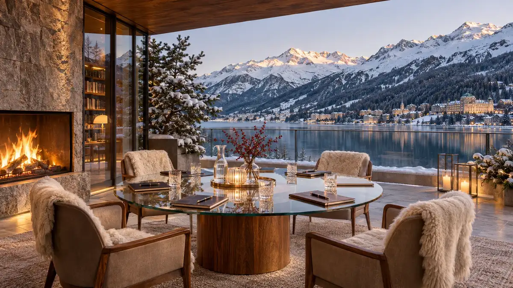

01
Prosperity
A sponsor-only roundtable · St Moritz, Switzerland
Human Agency and the Political Economy of Machine Intelligence.
Machine capability may transform production without settling the distribution of power, the purpose of institutions or the sources of a worthwhile life.
Future Work brings a small group together to examine the choices that arrive before any post-scarcity future: who owns productive intelligence, who bears its failures, which human capabilities must endure, and how prosperity can widen agency rather than dependence.
ASI is treated as a scenario to test, not a timetable to endorse. The discussion is designed to remain useful under rapid, uneven or slower progress.
Humans at the frontier
“The central question is not whether people can outperform machines. It is whether they must prove economic superiority to deserve a worthwhile life.”
Each conversation begins with a disagreement and ends with a choice that institutions could act on.
Prosperity
Meaning
Institutions
Responsibility
Capability
Transition

Separate observed evidence from assumptions about AGI, ASI and labour displacement.
Compare public wealth, universal services, employee ownership and distributed infrastructure.
Explore agency, care, apprenticeship, human contact and institutions of meaning.
Negotiate actions worth taking even when the dominant forecast proves wrong.
No keynotes. No product pitches. No panels performed for an audience. The day is conducted under a non-attribution rule and concludes with a short decision memorandum recording agreements, disagreements and evidence still required.
A deliberately plural table, selected for the quality of disagreement rather than institutional prestige alone.
Work, market structure, public finance and ownership.
Scenarios, uncertainty and the long arc of capability.
Systems, agents, robotics, compute and real constraints.
New institutions, products and forms of human agency.
Workers, employers and public servants living the transition.
People willing to test the room’s most comfortable assumptions.
Attendance is curated. No individual or institution is presented as confirmed until formally announced.
Sponsors arrive before the roundtable and leave after a final morning on the mountain.
Arrival in St Moritz, sponsor welcome and informal evening gathering.
Roundtable from 10:00 to 18:00, followed by a private sponsor dinner.
Skiing in St Moritz, with carriages and onward departures in the afternoon.
A sponsor’s guest may arrive on 16 January morning and depart after the roundtable that evening. Final hotel, transport and skiing arrangements will be confirmed directly with participants.
Each tier protects the independence of the conversation. Sponsors receive access and recognition, not editorial control.
One roundtable place and two nights in St Moritz for one attendee.
Gold recognition, two roundtable places and two nights in St Moritz for two attendees.
Premier recognition, two roundtable places and two nights in St Moritz for two attendees.
Air travel, insurance, personal ski equipment and incidental expenses are excluded unless confirmed in the sponsor agreement. Taxes, if applicable, will be stated in the final invoice.
16 January 2027 · St Moritz
The programme is reserved for sponsors and their invited guests. Sponsorship supports a candid, independent discussion and does not purchase a speaking slot or control over the conclusions.
General enquiries · frontierstack@proton.me